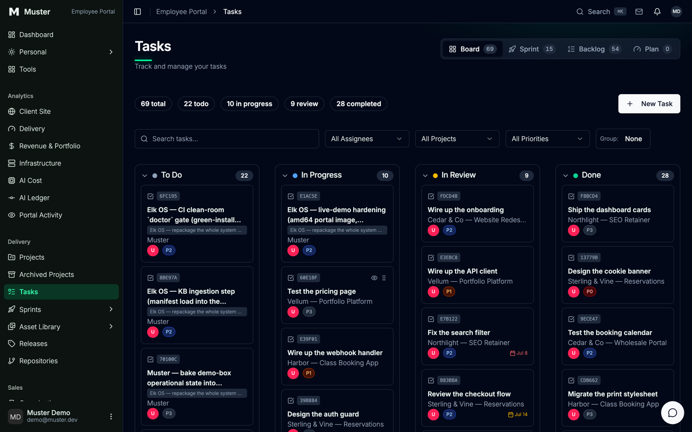

The agent-connected back office
Your back office, wired into Claude Code.
Projects, clients, invoices, knowledge, assets, and delivery records in one self-hosted system your agents can update while they work.
Claude Code is stateless; your business is not. The records above are the ones that outlive a session, and they live in a Directus you host. The plugin wires your agents into them over MCP: four commands, one approval, and the row you check is the row an agent can update while it works. Start with the demo.
The Claude Code connection
The update is a side effect of the work.
Every back office you have set up died because keeping it current was a second job. This one is written to by the agents already doing the first job.
# in Claude Code /plugin marketplace add AnalogElk/muster /plugin install muster@muster
That is two commands, not one. /plugin install muster alone is invalid until the marketplace has been added first. Verified 2026‑07‑15 against github.com/AnalogElk/muster on Claude Code 2.1.211, from a clean install: what actually happened, not what a doc claimed.
# zero arguments works; it resolves to the public demo board by default /muster:connect https://cms.musterr.dev
Four slash commands, one skill, one SessionStart hook, and one MCP server connection. .claude-plugin/plugin.json names all of it.
The first time an agent calls an MCP tool from the plugin, Claude Code stops and asks you to approve it. That approval is one time, but it is real: there is no zero‑click connection. The honest flow is install, approve, connect. Writes need your own deployment and writable credentials. The public demo is read‑only.
Proof
This is the actual system, not a mockup.
Two doors, both public, no sign-in. Open either one and count the rows yourself.

Team view
app.musterr.dev
Delivery, money, studio operations, knowledge and assets, and the analytics over all of it.
Client view
app.musterr.dev/client-portal
What a client sees: their projects, tasks, invoices, brand assets, and messages. Nothing else.
Once you are connected, /muster:board shows the same task rows from inside Claude Code, without opening the portal.
The demo is a static snapshot of a real deploy, captured on 2026‑08‑02. The data is synthetic, there is no sign-in, and nothing you click is saved. It shows the shape of the records. It does not prove agent writes, and it is not a clean-install replica.
What is in it
Five desks and a second front door.
The schema ships 50 snapshot entries: 38 os_* collections, 6 support tables, and 6 groups that only organize the sidebar. This is what they add up to.
Delivery desk
Projects, tasks, sprints, releases, and repositories: what's claimed, what's blocked, and what actually shipped, on rows that outlive the session that wrote them.
Demo: open Tasks and switch views, backlog to sprint to plan. /muster:board shows the same rows from inside Claude Code.
Money desk
Deals, proposals, invoices, payments, expenses, and the services and packages you sell: a ledger, not accounting software; no double entry, no bank feed, no tax workflow.
Demo: Invoices and the revenue view. Synthetic data, read-only.
Studio operations
Organizations, contacts, activities, support, messages, and your own inbox: the studio's records, not its employment paperwork; no payroll, no hiring, no time tracking.
Demo: follow one organization through to its contacts and its activity trail.
Knowledge and assets
The knowledge base holds what you've learned; the asset library holds what you've made, review states and brand guidelines attached.
Demo: the knowledge base and the asset library. Retrieval runs locally; answer generation uses the model provider you configure.
Operations view
One dashboard over the rest of the desk: site, portfolio, delivery, and infrastructure analytics, plus a cost ledger for what the agents spent.
Demo: the dashboard and the AI ledger, synthetic data. Connected-service views need your own credentials; without them a view can be empty or explicitly mocked.
Client portal
The second front door: clients sign in to the same records you work, scoped to what they may see: projects, invoices, brand assets, messages.
Demo: open the client view, then compare it with the team view.
Self-host
Your Postgres, your Directus, your rows.
A Docker Compose stack you run yourself, MIT licensed. There is no hosted plan to be moved off, and no export to request.
# from inside Claude Code, once the plugin is installed
/muster:up
/muster:doctor
/muster:up wraps the bring-up and /muster:doctor returns a health report you can read. The stack itself is compose/compose.yaml and bin/elk-os, under the MIT licence.
Docker is the hard dependency. The portal runs from a published image or a source checkout you supply; without one, the stack comes up Directus‑only. A clean self‑host does not reproduce every section of the demo, because the base snapshot omits the demo's enrichment.
The honest catch
What this does not do.
Four that change whether you should install it. The other six follow.
- Muster does not make Claude smarter or run agents in the background. It gives instructed agents shared records and a protocol. Reach for it when the work outlives a session, or when more than one agent is running at once.
- The first MCP tool call requires approval in Claude Code. There is no zero-click connection. Approve it once, then
/muster:connecttakes no arguments. - The public demo is synthetic and read-only. It proves shared reads, not agent writes or self-hosting. To watch an agent write a row, stand up your own.
- A clean self-host does not reproduce every demo section. The base snapshot omits demo enrichment and some portal dependencies, and the portal requires a published image or a separate source checkout.
The other six
- The Money desk is not accounting software. There is no double-entry ledger, bank feed, reconciliation, tax workflow, or bookkeeping automation.
- Studio operations is not HR software. There is no payroll, hiring, benefits, leave management, or time tracking.
- Connected-service views require their own credentials. Without them, a view may be empty, unavailable, or explicitly mocked.
- Task claims are not atomic locks. Avoiding collisions requires disjoint assignments and worktree isolation. The row records the intent; it does not enforce it.
- Retrieval and embeddings can run locally. Answer generation uses the configured model provider, so nothing here claims that all assistant data stays on your box.
- Muster is unnecessary for work that fits in one context and has no back-office records to maintain. A single agent on a single small task does not need any of this.
The plugin added about 220 tokens per session when measured from a clean install on Claude Code 2.1.211 on 2026‑07‑15. That is a dated measurement, not a standing guarantee. Whatever your verifiers spend sits on top of it, and it is paid whether or not they find anything.
Go deeper
Two more documents, if you want them.
This page is the pitch. Neither of these is required reading to install the plugin above.
How Muster was built → Read the whitepaper → GitHub ↗
Both are dated records of an earlier build, kept as they were written. The build log is a field report on the original build: the agents, the bugs it caught, the honesty ledger. The whitepaper is the same material in long form, with citations. Each carries a dated note where the current product has moved past it.